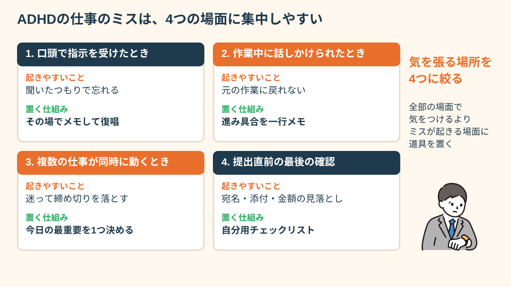
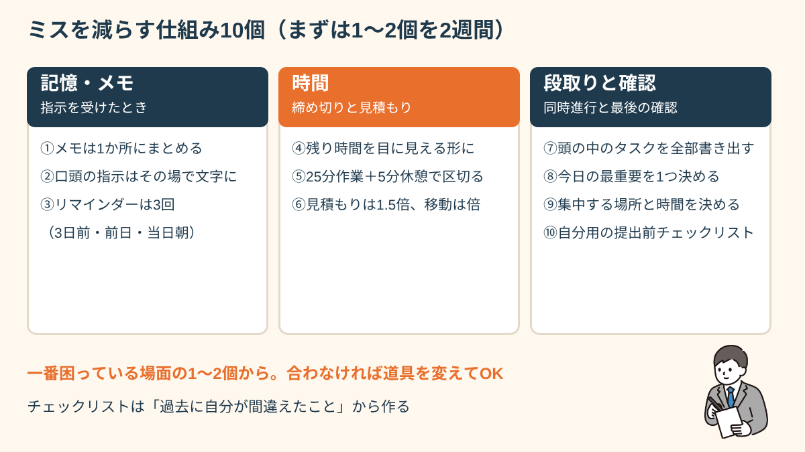
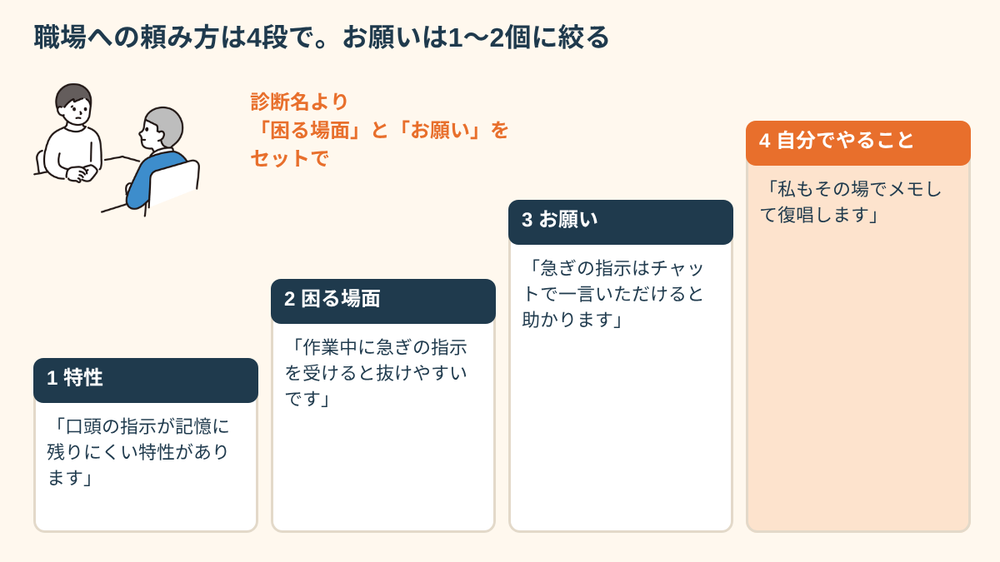
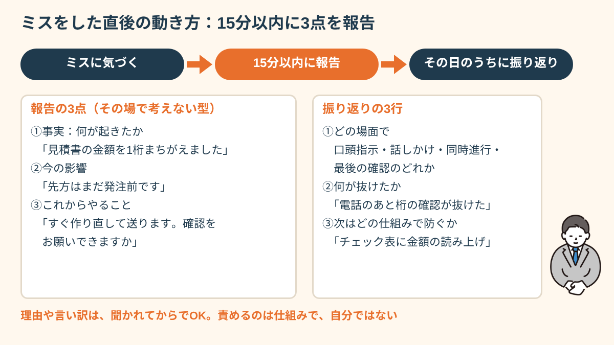
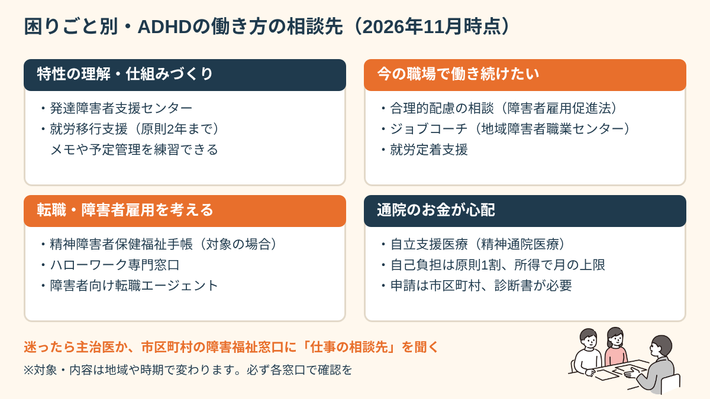

先にお伝えしたいのは、ミスが多いのはあなたの努力や性格が足りないからではなく、ミスが起きやすい「場面」に仕組みが置かれていないことが多い、ということです。この記事では、ADHDの特性と仕事のミスの関係を場面ごとに整理し、メモ・締め切り・確認の具体策10個、職場への伝え方、ミスをした直後の立て直し方、一人で抱えないための相談先まで、就労支援の現場で実際に使っている形でまとめます。
ADHDの特性と、仕事でミスが起きる理由
ADHDは、脳の「実行機能」と呼ばれる働き（段取りを立てる、覚えておく、集中を保つ、気持ちや行動を切り替える）に関わる特性です。「やる気の問題」でも「性格の問題」でもなく、生まれつきの脳の働き方の違いとされています。同じ職場で同じ説明を受けても、情報を頭の中に置いておける量や、注意が向く先が人によって違う、とイメージすると分かりやすいかもしれません。
仕事で困りやすい場面は、おおむね次の3つに分けられます。
- 不注意の困りごと：うっかりミス、忘れ物、話の途中で別のことを考えてしまう、書類の読み飛ばし。たとえば「請求書の金額は合っているのに宛名が前回のまま」「メールの添付を忘れる」といった形で出やすくなります。
- 多動・衝動性の困りごと：会議中にじっとしていられない、思いついたことをすぐ口に出す、確認する前に送信ボタンを押してしまう。「早く終わらせたい」気持ちが強いほど、最後のひと手間が抜けやすくなります。
- 時間と段取りの困りごと：締め切りを忘れる、作業時間を短く見積もる、目の前の作業に没頭して次の予定を忘れる。夕方になって「今日やるはずだった大事な仕事」に気づく、という声は本当に多いです。
ここで大切なのは、ミスが「いつでも同じように」起きるわけではない、という点です。相談を受けていると、ミスが集中する場面にははっきりした傾向があります。口頭で指示を受けたとき、作業の途中で話しかけられたとき、複数の仕事が同時に動いているとき、そして提出直前の最後の確認です。逆に、手順が決まっていて文字で見られる作業や、一つのことに集中できる環境では、周りより速く正確にこなす方も多くいます。
つまり、「ミスをなくそう」と全部の場面で気を張るより、ミスが起きやすい4つの場面にだけ、道具や手順を置くほうが、ずっと少ない力で結果が変わります。「気をつけます」と何度言っても変わらなかったのは、気をつける場所が広すぎたからかもしれません。

また、ADHDの特性は困りごとだけではありません。好きな分野への強い集中力、発想の速さ、行動力、ピンチのときの底力など、環境が合えば強みとして働く面もあります。困りごとと強みは同じ特性の表と裏であることが多く、「直すべき欠点の一覧」として見るより、「どこで困り、どこで力が出るか」を知っておくほうが、仕事選びにも役立ちます。
ミスを減らす仕組み10個。メモ・締め切り・確認の具体策
ADHDの困りごとに対していちばん効果が出やすいのは、「気をつける」ではなく「仕組みを作る」やり方です。ただし、10個を一度に始めると、それ自体が負担になって続きません。まずは自分が一番困っている場面の1〜2個から、2週間だけ試すのがおすすめです。
記憶・メモの仕組み（指示を受けたときのミスを減らす）
- ①メモは1か所にまとめる：ノート、付箋、スマホのメモが混ざると「どこに書いたか」で迷います。仕事用のメモアプリかノートを1つに決め、他には書かないルールにします。
- ②口頭の指示はその場で文字にする：「あとでメモしよう」は抜けやすいので、言われた瞬間に書きます。書いたら「〇日までに△を□さんに送る、で合っていますか」と復唱すると、聞き違いもその場で直せます。
- ③リマインダーは3回鳴らす：締め切り当日だけでなく、「3日前」「前日」「当日の朝」に通知を入れます。1回だけだと、鳴ったときに別の作業中で流してしまうことがあるためです。
時間の仕組み（締め切りと見積もりのミスを減らす）
- ④残り時間を目に見える形にする：残り時間が色や面積で分かるタイマーや、スマホのタイマーを机に置きます。「あと何分」が見えるだけで、没頭しすぎを防ぎやすくなります。
- ⑤作業を25分で区切る：25分作業して5分休む、というように時間を区切ると、集中が切れる前に休めます。区切りごとに「今どこまで進んだか」を一行メモすると、話しかけられても戻りやすくなります。
- ⑥見積もりは1.5倍にする：「30分で終わる」と思った仕事は45分、移動は倍で予定を入れます。最初から多めに見積もっておけば、遅れても慌てずに済みます。
段取りと確認の仕組み（同時進行と最後のミスを減らす）
- ⑦頭の中のタスクを全部書き出す：朝いちばんに、気になっていることを全部紙に出し、「今日やる」「今週やる」「あとで」に分けます。
- ⑧今日の最重要を1つだけ決める：全部を同じ重さで抱えると優先順位で迷います。迷ったら「今日これだけは終わらせる」を1つ決め、分からなければ上司に「どれから手をつけるべきですか」と聞いてしまいます。
- ⑨集中する場所と時間を決める：通知を切る、窓際や壁向きの席を使う、午前中の90分は集中作業にあてるなど、気が散りにくい条件を固定します。
- ⑩提出前のチェックリストを作る：「宛名」「日付」「金額」「添付」「送り先」など、自分がよく間違える項目だけを5つ程度に絞った確認表を作り、送信前に指で押さえながら確認します。

チェックリストを作るときのコツは、一般的な項目を並べるのではなく、「過去に自分が実際に間違えたこと」から作ることです。たとえば「金額は合っていたのに宛名が前回のままだった」という失敗があったなら、「宛名を今回の相手に変えたか」を1行目に置きます。自分の失敗から作った確認表は、他人が作ったものより何倍も効きます。
「前は付箋を机じゅうに貼っていて、結局どれが新しい指示か分からなくなっていました。スマホのメモアプリ1つにまとめて、送信前に『宛名・添付・日付』の3つだけ指差しするようにしたら、上司に呼ばれる回数がはっきり減りました。ミスがゼロになったわけではないけど、『またやった』と落ち込む日が減ったのが一番大きいです。」
職場に伝えるかどうか。開示の判断と頼み方の型
ADHDであることを職場に伝えるかどうかは、本人が決めてよいことです。障害者雇用枠で働く場合は、障害の内容を伝えたうえで配慮を相談することが前提になります。一般の求人で働く場合は、伝えるか伝えないかを自分で選べます。どちらが正解ということはなく、「伝えたときに得られるもの」と「伝えないで工夫できる範囲」を比べて決めるのが現実的です。
伝えるときにおすすめしたいのは、診断名から入るより、「困る場面」と「こうしてもらえると助かること」をセットで伝えるやり方です。「ADHDです」とだけ伝えると、相手は何をすればいいか分からず、かえって身構えてしまうことがあります。次の4つの順番で話すと、相手も具体的に動きやすくなります。
- 特性：「口頭で言われたことが、記憶に残りにくい特性があります」
- 困る場面：「特に、作業中に急ぎの指示を受けると、元の作業か新しい指示のどちらかが抜けやすいです」
- お願い：「急ぎの指示は、チャットで一言いただけると助かります」
- 自分でやること：「私も、受けた指示はその場でメモして復唱するようにします」
最後の「自分でやること」を添えるのがポイントです。お願いだけでなく、自分の工夫も一緒に伝えると、「配慮してもらう人」ではなく「一緒に仕事のやり方を整える人」として受け取ってもらいやすくなります。お願いは最初から5つも6つも並べず、いちばん困っていることを1〜2個に絞ると、相手も応えやすくなります。

「会社に診断を伝えるのは怖かったけど、『メモを取る時間がほしい』『作業の区切りで確認させてほしい』と具体的に伝えたら、『そのくらいなら全然いいよ』と言ってもらえました。もっと早く言えばよかった、というのが正直な気持ちです。」
ADHDに向いている仕事の傾向と、職種より大事な「環境の条件」
ADHDの特性（行動力、好奇心、集中の波、発想の速さ）が強みになりやすい仕事として、よく挙げられるのは次のようなものです。変化があって飽きにくい営業や接客、発想力が生きる企画やデザインなどのクリエイティブ系、問題解決に没頭できるIT・プログラミング、動きの多い現場の仕事などです。
一方で、細かい数字を長時間ひとりで突き合わせる仕事、同じ作業を何時間も続ける単調な仕事、分刻みの時間管理が求められる仕事は、疲れやすい傾向があるとされます。ただ、これはあくまで傾向です。実際の相談では、同じ職種でも「職場の条件」が違うだけで、続くかどうかがまったく変わる場面を何度も見てきました。
そこで、職種を選ぶときに一緒に確かめてほしいのが、次のような環境の条件です。
- 指示がチャットやメールなど、文字で残る形でもらえるか
- 大きな仕事を、小さな締め切りに区切って進められるか
- 途中で進み具合を確認できる相手（上司・先輩）がいるか
- 電話や話しかけが多すぎず、集中できる時間や場所があるか
- ミスが起きたときに、責めるより「仕組みで防ぐ」文化があるか
面接や職場見学では、「指示はどのような形でいただくことが多いですか」「入社後の最初の1か月は、どのように仕事を覚えていく流れですか」と質問すると、これらの条件が見えてきます。営業職に就いて「外回りは楽しいのに、月末の経費精算で毎回ミスをして怒られる」という方が、精算をまとめて事務の方に確認してもらう形に変えてもらい、仕事を続けられた例もあります。職種そのものより、苦手な部分をどう分担できるかが、続くかどうかを左右することが多いのです。
仕事が長く続かないことに悩んでいる方は、ADHDで仕事が続かないと感じたときの考え方の記事もあわせて読んでみてください。
薬物療法と就労で知っておきたいこと
ADHDの治療では、集中や衝動のコントロールを助ける薬（コンサータ、ストラテラ、インチュニブなど）が使われることがあります。ただし、効き方や副作用には個人差が大きく、「薬を飲めば仕事のミスがなくなる」というものではありません。薬は、この記事で紹介したような仕組みや環境の工夫と組み合わせて使う「道具の一つ」と考えるのが現実的です。
働きながら治療を続けるときに役立つのが、仕事の場面を主治医に伝えるメモです。診察の時間は限られているので、「午前は集中できるが、午後3時ごろからミスが増える」「会議の日は特に疲れる」「飲み始めてから昼ごはんが食べにくい」など、仕事の中で気づいたことを日付と一緒に短く書いておき、そのまま見せます。「調子はどうですか」と聞かれて「まあまあです」で終わってしまうより、ずっと具体的な相談ができます。
また、飲み始めや薬を変えた直後は、効き方を確かめる期間になることがあります。新しい職場に入る時期と重なると、体調の変化が薬によるものか、環境の変化によるものか分かりにくくなります。就職や転職を考えているときは、そのタイミングも含めて主治医に相談しておくと安心です。
ミスをした直後にやること。報告の型と、同じミスを繰り返さない振り返り
どれだけ仕組みを整えても、ミスがゼロになることはありません。実は、ADHDのある方が職場で信頼を失いやすいのは、ミスそのものより、ミスに気づいてから報告するまでの時間が空いてしまうことだったりします。「怒られるのが怖い」「自分で直せば間に合うかも」と考えているうちに時間がたち、気づいたときには取り返しにくくなっている。相談でも、本当によく聞く流れです。
何度も叱られた経験があると、ミスに気づいた瞬間に頭が真っ白になったり、言い出すのが怖くて手が止まったりするのは自然な反応です。だからこそ、その場で考えなくて済むように、報告の型をあらかじめ決めておくことをおすすめします。報告は次の3つだけで十分です。
- 何が起きたか（事実）：「〇〇社への見積書で、金額を1桁まちがえて送ってしまいました」
- 今の影響：「先方はまだ社内で確認中とのことで、発注前です」
- これからやること：「正しい見積書をすぐに作り直して、お詫びと一緒に送ろうと思います。送る前に確認していただけますか」
この3つを、気づいてから15分以内に伝えることを目標にします。理由や言い訳は、聞かれてからで大丈夫です。スマホのメモに「事実・影響・これから」の3行の書き出しを入れておけば、慌てているときでも埋めるだけで報告できます。

落ち着いたら、その日のうちに短い振り返りをします。ここで大事なのは「次は気をつけます」で終わらせないことです。振り返りは、どの場面で（口頭指示・途中で話しかけられた・同時進行・最後の確認のどれか）、何が抜けたか、次はどの仕組みで防ぐか、の3行で書きます。たとえば「見積書の作成中に電話が入り、戻ったときに桁の確認が抜けた。次は送信前チェックリストに『金額を声に出して読む』を加える」という形です。
この振り返りを2〜3回分ためると、自分のミスが起きやすい場面の傾向が見えてきます。それを上司との面談で見せれば、「何回言ったら分かるの」という話ではなく、「この場面ではこう防ぎます」という前向きな相談に変えられます。ミスのたびに自分を責め続けると、気持ちが落ち込んだり眠れなくなったりする、いわゆる二次的な不調につながることもあります。責めるのは仕組みで、自分ではないと覚えておいてください。
「ミスに気づくと、どうにか自分で直そうとして黙ってしまう癖がありました。『事実・影響・これから』の3行をスマホに入れてから、とにかく15分以内に言うようにしたら、上司の反応が全然違いました。『早く言ってくれて助かった』と言われたのは初めてで、少し泣きそうになりました。」
一人で抱えないための相談先と制度（2026年11月時点）
ここまでの工夫を一人で全部やろうとすると、それだけで疲れてしまいます。ADHDのある方が働くときに使える相談先や制度は、思っているより多くあります。困りごと別に整理しておきます。制度の内容や対象は、お住まいの地域や時期によって変わることがあるため、必ず各窓口で最新の情報を確認してください。
特性の理解と仕組みづくりを相談したいとき
発達障害者支援センターは、都道府県や政令指定都市などに置かれている相談窓口で、本人や家族の相談を受け付けています。就労に関する相談にのってもらえるほか、地域の支援機関を紹介してもらえることもあります。また、就労移行支援（原則2年まで）では、働く前に生活リズムを整えたり、メモやスケジュール管理の練習をしたり、自分に合う仕組みを試したりできます。
今の職場で働き続けたいとき
障害者雇用促進法では、事業主に、障害のある人が働くうえでの支障を改善するための合理的配慮を提供することが義務づけられています。配慮の内容は話し合いで決めるもので、何でも通るわけではありませんが、「指示を文字でもらう」「作業の区切りで確認の時間をとる」といった相談はしやすい内容です。職場との間に入ってほしいときは、地域障害者職業センターのジョブコーチ（職場適応援助者）による支援を受けられる場合があります。就職後のつまずきには、就労定着支援という仕組みもあります。
転職や障害者雇用を考えるとき
ADHDの診断があり、日常生活や仕事に一定の困りごとがある場合、精神障害者保健福祉手帳の対象になることがあります。手帳があると障害者雇用の求人に応募できるようになり、選べる職場が広がります。民間企業の法定雇用率は2026年7月から2.7%に引き上げられ、障害者雇用の求人は増える流れにあります。求人探しは、ハローワークの専門窓口や、障害者向けの転職エージェントに相談する方法があります。
通院のお金が心配なとき
ADHDで継続して通院している場合、自立支援医療（精神通院医療）を使うと、通院や薬の自己負担が原則1割になり、所得に応じて月の上限額も決まります。申請は市区町村の窓口で、主治医の診断書が必要です。

どこに相談すればいいか分からないときは、まず主治医か、お住まいの市区町村の障害福祉の窓口に「仕事のことで相談できるところを知りたい」と伝えてみてください。そこから必要な窓口につないでもらえることが多いです。マルチタスクで仕事が回らないことに悩んでいる方は、ADHDでマルチタスクが苦手なときの優先順位の聞き方も参考になります。
まとめ
- ADHDの仕事のミスは「気合」ではなく、ミスが起きやすい4つの場面に「仕組み」を置いて減らす
- 仕組みは10個全部ではなく、一番困っている1〜2個から2週間だけ試す
- 職場には「特性・困る場面・お願い・自分でやること」の順で、1〜2個に絞って伝える
- 職種より「指示が文字で残る」「小さく区切れる」などの環境の条件を確かめる
- ミスをしたら「事実・影響・これから」を15分以内に報告し、振り返りは3行で
- 発達障害者支援センター、就労移行支援、ジョブコーチ、手帳、自立支援医療など、使える相談先は多い